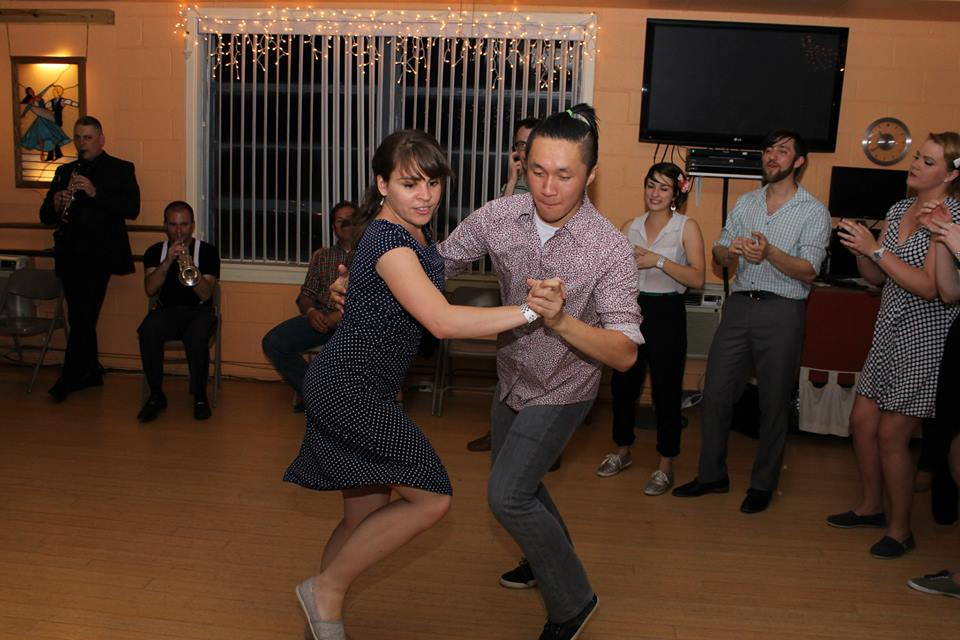
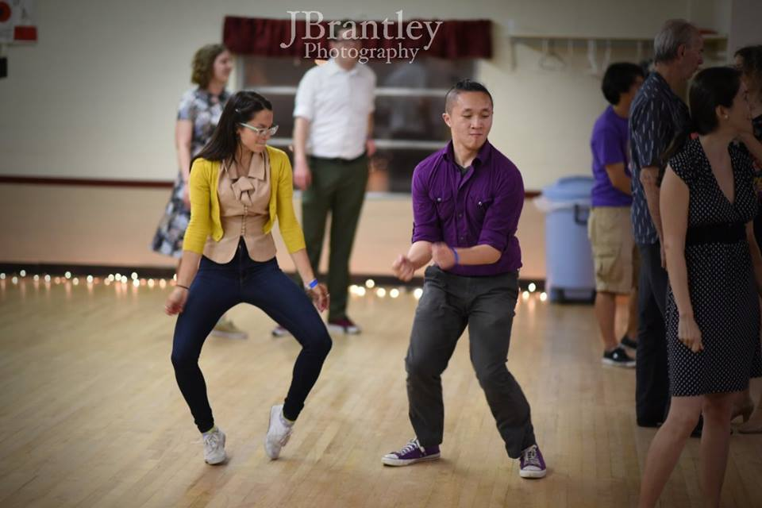
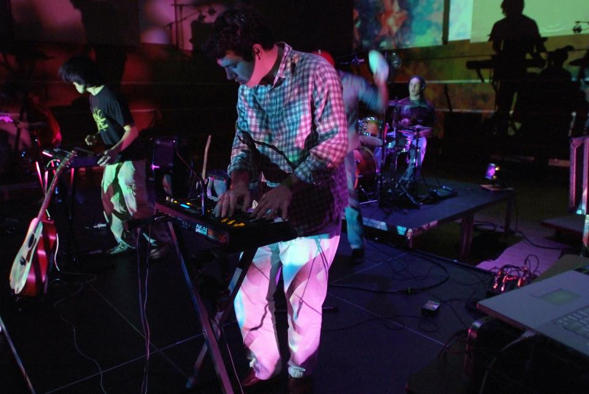

Hello friends! My name is Paul Nguyen. I was born in San Jose, California, but was raised in New Orleans, Louisiana.
|
Photo credits: © Jason Mrachina |
|---|
I went to Washington & Lee University for my undergraduate education and earned my B.S. in Computer Science and my B.A. in Mathematics.
 Photo credits: © J. Stephen Conn |
Photo credits: © Taber Andrew Bain |
|---|
I went to graduate school at the University of Virginia to earn my Master of Computer Science from the Computer Science Department. I studied computer graphics and computer vision under Connelly Barnes.
|
Photo credits: © Me! |
|---|
I love Swing dancing and all the silliness that comes with it! I regularly travel and compete throughout the U.S. in Lindy Hop, Balboa, and Solo Vernacular Jazz competitions.
|
 Photo credits: © Jordon Chan |
 Photo credits: © Jeremy Brantley |
|---|
I enjoy playing music and music production. I perform mostly in Electronic Rock acts as either a producer or guitarist and do Electronic music production. However, right now most of my playing has focused on Swing Era Jazz.
|
 Photo credits: © Graham Spice |
|---|
I also do a lot of photography.
|
Photo credits: © Me! |
Photo credits: © Me! |
|---|